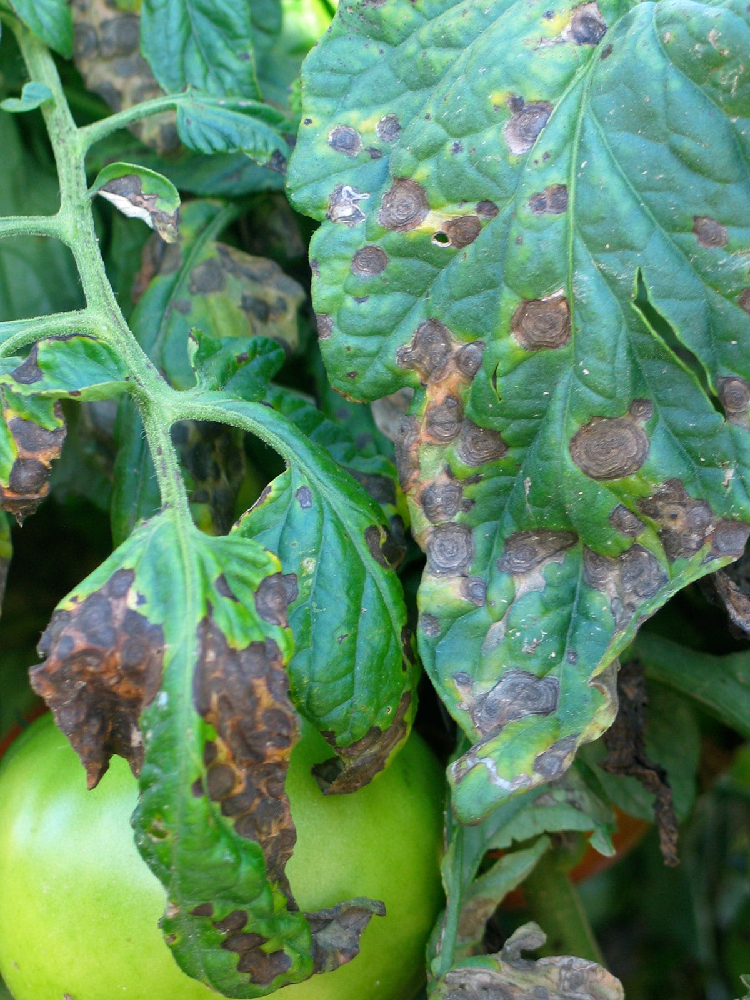
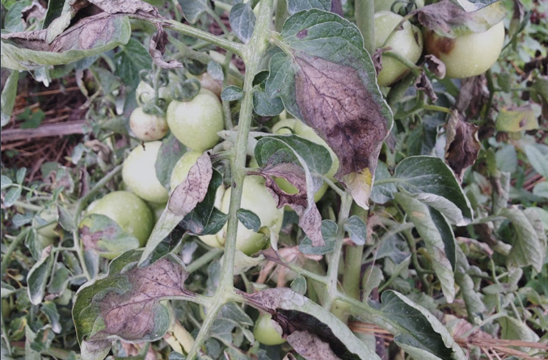

Tomato plants, especially when grown in organic systems, can be susceptiable to various diseases that can destroy the crop. Examples are included below:
rings on the leaves

water soaked chlorotic spots that progress to necrotic lesions
